1. 简介
- 文档属主: ZoomQuiet
- 版本:
-
- 090329: ZQ 绘制关键图谱，形象的表述相关概念/策略;
- 090321: ZQ 增补正文提纲化,加入相关图书参考；
- 090314: ZQ 增补相关图片
- 090307: ZQ 创建,设定基本结构
本文包含知识管理的基本理论简介以及针对金山推行知识管理的简要分析以及草案,为金山CKO协同CIO推行知识管理,从个人知识管理体验提供了相关建议和参考;
1.1. 概述
本文根据最简原则,从以下几个方面快速阐述知识管理的实施:
- 概念: 从最通俗的角度,说明什么是企业知识管理;
- 规划: 从最直觉的方式,分析并指出在金山推行知识管理的策略;
- 实施: 从可行性角度,举出几种可靠的推行知识管理的思路;
- 文化: 从最终效果出发,分析长期坚持知识管理的理想成果
2. KM
Knowledge Management ~ 知识管理是新兴的领域,在知识经济时代,已经成为高科技企业的核心竞争力;
2.1. 知识
附图:认知识模型图谱
- 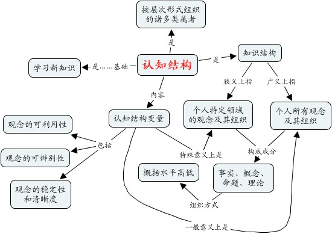
- 根据 SECI模型（野中郁次郎 & 竹内弘高） 得出的知识螺旋;
- 知识从来不是名词!
- 知识只能是一系列复杂的社会和心理活动;
- 表现出来的效果是:
- 知晓已知
- 识别未知
2.2. 知识管理
知识管理主要学派对的基点认识:
- 技术学派: KM是对信息的管理;
- 行为学派: KM是对人的管理;
- 综合学派: KM是将信息处理能力和人的创造力结合,增强组织对环境的适应能力;
当前整个领域趋向于统一到
综合学派的研究方向; 附图:知识流转循环图谱

- 核心关注的问题域是:
- 如何加速知识从显性知识到隐性知识的转化速度?!
- 如何加速知识从隐性知识到显性知识的输出速度?!
- 如何加速知识从积累到再创造的循环速度?!
2.3. 企业知识管理
知识是用于生产的信息（有意义的信息）。
- －－1998年，世界银行《1998年世界发展报告－知识促进发展》
企业内部的知识由于以下特性而难于被管理：
- 惊人的可有多次利用率和不断上升的回报。
- 散乱、遗漏和更新需要。
- 不确定的价值。
- 不确定的利益分成。
但是企业实施知识管理的收益是确切的::
附图:企业知识管理的驱动因素
- 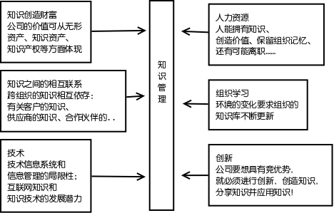
- 和一般意义的知识管理类似,在企业内部实施知识管理也面临着同样的基础问题域;
- 而且在企业,特别是高科技企业内部,
知识的价值决定于知识分享的速度！
2.3.1. 知识场强
在一个组织内部,各个成员掌握的知识领域和程度的不同,以及其它因素,导致每个知识节点有不同的知识场强;
- 其分析的基本公式是:
EK(g,p,s)- 物理距离 geography distance
- 心理距离 psychology distance
- 知识距离 knowlefge distance
- 企业知识管理,就是要尽量缩短每个知识节点间的各种
"距离"加速知识的流通!
3. 规划KM
附图:知识管理理解公式
- 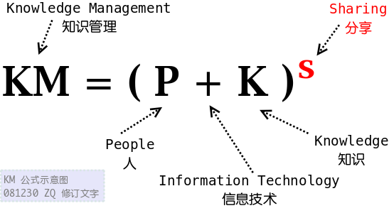
3.1. 失败经验
在世界范畴内的企业,实施知识管理失败的例子不在少数,但是归结到底都是因为对KM的理解偏差:
- 常见KM误解:
-
- 知识管理是关于知识的
- 知识管理系统应该把关注的焦点放在快速增长、改善运营和增加利润空间上。
- 知识管理是关于技术的
- 知识管理不是一个单纯技术项目，它必须能够适应快速变化的商业环境。
- 知识管理是万能的
- 知识管理不可能一天就解决所有的信息问题，应该从小处开始逐步取得成效。
- 知识管理的目标是建立一个文档库
- 知识管理不仅仅是为了保存信息，更重要的是要利用知识帮助企业做出更好的决策。
- 能买到一个现成的系统
- 知识管理的工具繁多，核心问题是怎样把这些工具和你的成长，运营和技术战略进行集成。
- 知识管理就是控制知识
- 知识管理不是为了控制知识，而是要努力培育一种分享知识的企业文化。
- 做好之后，他们就会用的
- 知识管理的成功应用，必须得到高层领导的坚定支持并配合鼓励知识共享的企业制度。
- 知识管理是关于知识的
- 常见失败因素:
-
- 没有获得高层领导的支持
- 由上而下进行的项目，没有底层的参与
- 忽略在人事和技术上的后续支出
- 选择错误的技术解决方案
- 没有预先设定运营的目标
- 选择错误的顾问公司
- 错误的衡量过程
- 制定宽泛的策略，无法完全实现
- 忽略用户的因素
- 缺乏实施后的持续改进
3.2. 战略思路
知识管理战略必须支持经营战略，并且超越经营战略。--CKO Summit 2000
附图:知识管理战略结构图谱
- 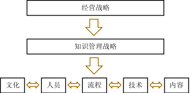
- 基本思路:
-
- 把知识管理作为组织经营战略
- 对
高知成员实施针对性的管理政策 - 知识转移和最优实践活动
- 建立并实施以客户为重点的知识战略
- 建立组织成员对知识的责任感
- 建立并实施无形资产管理战略
- 建立并实施技术创新和知识创造战略
资料来源：美国生产力与质量研究中心
3.3. 宏观方略
附图:以知识基础为基础的公司发展路线
- 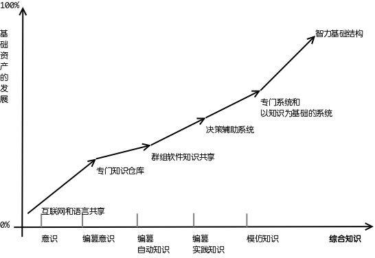
- 企业实施KM是个长期的活动,要有明确的方向,并不断调整
- 对于以高科技为核心的知识型企业需要对企业KM 的阶段有明确的认识
3.4. 实施框架
附图:知识管理实施框架图谱
- 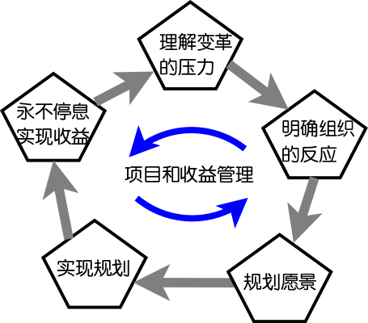
- 0.定义目标:
-
- 启动KM,首先要根据公司战略识别出KM战略目标
- 问答以下核心问题:
- "我们希望达到的目的地是哪里?"
- "我们目前所处的位置在哪里?"
- 即,对企业KM现状的审视,包含:
- 角色
- 文化
- 过程
- 内容
- 技术
- 即,对企业KM现状的审视,包含:
- 1. 确认组织的反应:
-
- 回答以下核心问题:
- "我们要如何才能从目前位置达到目标?"
- 即,将KM战略正式化,给出计划;
- 关键任务是完成一个或是多个有针对性的业务案例,以便提供特定的基础,开展改进
- 回答以下核心问题:
- 2. 规划愿景:
-
- 集中于变革的5要素:
- 领导
- 人员
- 流程
- 技术
- 信息
- 认真考虑每一特定领域内的细节,集中关注每个领域内存在的问题与机会,建立一综合性的有效实施规划;
- 集中于变革的5要素:
- 3. 实现愿景:
-
- 试点,总结经验,不断的宣传,在不同层级实施不同方式的KM;
- 修正日常工作行为
- 4. 永不停息:实现收益:
-
- 关注收益管理,加强每个成功案例,增补每个失败案例;
- 对愿景持续改进,坚持实施,形成文化!
3.4.1. 黄金法则
- 对预期的收益有清醒的看法
- 摒弃短期行为,关注长期目标
- 缺乏领导,万事不成!
- 流程变化会提高业绩
- 组织学习带来组织成功!
4. 实施KM
在正确的时间，将正确的知识，以正确的方式传递给正确的人，并且帮助接收者利用已获得的知识，取得可衡量的提高!
附图:ERP和EKP对比
- 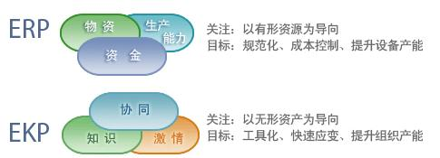
4.1. CKO 职能
CKO 是引导者,CKO一定不是CIO
- 核心任务是:
- 帮助员工成长
- 为领导者提供决策支持
- 制定企业知识政策
- 用KM技术/系统
- 组织专职人员引导
- 形成知识分享氛围和流程
- CKO 一定要熟悉IT技术,但是关注的领域远远超过CIO关注的领域,不应该合用一人 (会太累)
4.2. KM系统
附图:知识管理平台流程结构图
- 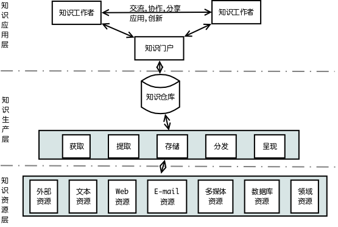
应该具备以下几种技术要素:
- 门户技术
- 搜索引擎动技术
- 协作技术
- E-Learning技术
- 商业智能技术
- 内容管理技术
- 集成技术
附图:知识管理平台功能结构图
- 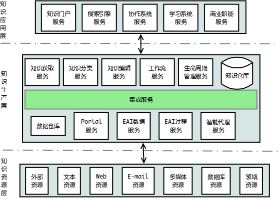
- 但是不一定要买:
-
- 因为没有企业是相同的
- 没有什么软件是可以通用到任何企业都契合的
- 只有靠谱的使用才能够形成价值
附图:SECI模型知识管理系统关系图谱
- 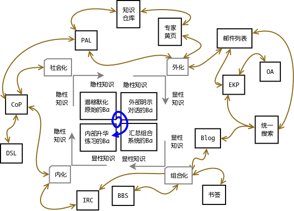
4.2.1. CoP
CoP (Community of Practise) -- 实践型社区
- 是基于共同兴趣、爱好，按照对话和协作的方式自由组织和建立的专项社区。在社区中，人们的加入和工作都是基于对话和协商，并在每次知识性交流后及时开展行动。所以CoP首先是一个知识性的社区，人们通过贡献分享知识联系在一起，并通过共同创造达成快速和富有成效的产出
- 企业内部基于任务形成"实践型社区" 是孵化面向知识共享的企业文化的杀手型措施!
- 上节图谱中,标识出的 CoP ,是加速知识从隐性知识在组合应用/创新的同时,完成外化并传播开的核心;
4.3. 实施原则
在企业内部实施KM,必须注意平衡原则
任何对公司有益的东西,都必然会有危害~ 知识管理也一样- 知识管理也是企业内部一个过程,可以使用过程改进的研究成果来辅助推动;
- 因为知识管理带来的是长期效应,在短期实施过程中,必然需要成员付出额外的工作,怎么补偿就成为实施KM成功与否的关键;
- 如果能够抵消知识管理带来的多余负担, 实施就会成功!
4.3.1. 从小处作
先解决急需KM支持的领域工作
- 实施过程中的每一步都应该力求解决实际的问题,带来可观的收益,从而成为KM实施的动力;而不能简单的使用行政手段强行推广;
- 识别出各个关键业务部门的核心流程中需要KM支持的点,逐一改进并解决, 例如:
- 客服部门的FAQ系统
- 产品部门的市场情报管理
- 开发部门的开发资料仓库
- 测试部门的测试用例仓库
- 管理部门的PAL(软件过程资产库)
- ...
4.4. 实施好点
可以从解决实际问题出发,先用分散的专用的系统/流程将离散的知识先一点点收集/管理/流通起来
4.4.1. 知识历程图
- 定义:
-
- 知识历程图(Knowledge Storyboard)，是指在企业的业务循环中，支持流程所需的知识以及参与其中的人的图表。
- 优势:
-
- 将人、流程和知识有机地结合在一起。
- 实施步骤:
-
- 了解业务流程的运作
- 分解业务流程的关键事件点
- 找出每个事件点的相关人员
- 找出每个事件点的相关知识
4.4.2. 知识网络图
- 定义:
-
- 知识网络图(Knowledge Network)，是将知识按照方便使用和管理的原则进行分类，建立中心知识和围绕中心知识的卫星知识。
- 优势:
-
- 将流程中的各个知识点联系在一起。
- 实施步骤:
-
- 确认中心知识内容
- 分解卫星知识内容
- 为每个卫星知识配备负责
4.4.3. 导师制
- 定义:
-
- 导师制(Trainer-Trainee System, TTS)，是指为每一位新员工有针对性地指定一位导师，导师通过正式与非正式的途径将自己的知识传授给新员工，使新员工能够在新的工作岗位上更好的适应和发展。
- 优势:
-
- 为企业提供人才保障
- 增加同事亲和力和团队凝聚力
- 有助于隐形知识转化为显性知识
- 实施步骤:
-
- 确定导师和被培养对象的资格
- 确定培养方向、方法、内容和课题
- 考核和优化
4.4.4. 实践社团
杀手级措施
- 定义:
-
- 实践社团(Community of Parctice, Cop)，是指为分享知识和情感所组成的非正式团体。
- 优势:
-
- 有利于情感的交流
- 有利发掘个人的隐性知识
- 有利于知识的共享和创新
- 有利于提升凝聚力
- 有利于发现和吸引人才
- 实施步骤:
-
- 明确社团关注的领域
- 明确社团的核心价值
- 选择社团促进者协调社团的活动
- 吸引成员加入社团
- 通过实践分享知识
4.4.5. 事后总结
- 定义:
-
- 事后总结(After Action Reviews, AAR)，是指通过总结过去成功和失败的经验教训，改进未来的表现。
- 优势:
-
- 有利于获取隐性知识并将其转化为显性知识
- 有利于诊断和评估个人及团队的表现
- 有利于提高发现和总结知识的能力
- 有利于培养团队的学习精神
- 实施步骤:
-
- 及时地召开总结会议
- 营造良好的讨论氛围
- 指定一个推动者
- 重新审视项目目标和交付物
- 寻找项目成功或失败的原因
- 确保所有参与会议者都充分发表了自己的意见
- 总结改进的措施
- 记录事后总结会议的内容
- 分享从事后总结会议中获得的知识
4.4.6. 企业知识仓库
- 定义:
-
- 企业知识仓库(Enterprise Knowledge Repository, EKR)，是指将企业的所有显性知识集成到一个知识管理平台之上，并以统一的用户界面提供给用户，使企业可以快速地建立企业对企业和企业对内部员工的知识使用门户
- 优势:
-
- 提供统一的知识访问渠道
- 提供不间断的知识沟通平台
- 提供强大的内容管理能力
- 提供个性化的应用服务
- 提供协作创新的平台
- 实施步骤:
-
- EKR的规划
- EKR产品和供应商的选择
- EKR的实施
- EKR的持续改进
4.4.7. 企业信息门户
- 定义:
-
- 企业信息门户(Enterprise Information Portal, EIP)，是指将企业的所有应用和数据集成到一个信息管理平台之上，并以统一的用户界面提供给用户，使企业可以快速地建立企业对企业和企业对内部员工的信息门户。
- 优势:
-
- 提供统一的信息访问渠道
- 提供不间断的服务
- 提供强大的内容管理能力
- 提供个性化的应用服务
- 提供协作工作的平台
- 实施步骤:
-
- EIP的规划
- EIP产品和供应商的选择
- EIP的实施
- EIP的持续改进
4.4.8. 企业Blog
- 定义:
-
- 企业Blog（Corporate Blogging），是企业创建和维护的Blog系统。既可以是面向内部的，也可以是面向外部的。由于操作简便，用户参与度高，可以用于知识分享和沟通交流。
- 优势:
-
- 使用方便
- 可以快速的发布信息
- 使用基于会话和主题的交流方式
- 可以及时地获得反馈和建议
- 能够提高客户满意度
- 实施步骤:
-
- 创建公开和透明的企业文化
- 部署Blog系统
- 积极回应从Blog反馈的信息
- 创建鼓励Blog的激励制度
- 将Blog变成日常工作的组成部分
4.4.9. 软件过程资产库
- 定义:
-
- PAL - Process Asset Library.为创建和维护工作产品和任务提供支持，这些工作产品和任务用于建立和维护过程资产。
- 实施:
-
- 为创建工作产品和任务提供赞助和资源，这些工作产品和任务用于建立和维护一组过程资产。
- → 对建立和维护过程资产的支持通常包括创建一个负责这些任务的过程组。这个过程组的角色应该在组织中得到广泛传达，这样，员工就会对过程管理是如何执行的以及应该如何与过程组交互（例如，提交改进建议），有一个清晰的理解。
- 使利益相关者适当地参与到创建、改进、评审和批准工作产品和任务中。
- 适当地维护和改进工作产品和任务
- 文档化工作产品和任务，这些工作产品和任务是建立和维护过程资产所需的。文档化包括如下活动：
- 识别和建立所需的过程资产。
- a) 基于组织目标，识别需要建立和维护哪些过程资产。
- b) 识别每一个过程资产的利益相关者。
- →利益相关者包括高级管理层、契约经理、过程所有者、过程使用者、过程消费者、客户、供应商和合作伙伴。
- → 管理层要做的事情包括：建立政策，赞助过程管理，以角色榜样的身份传达过程规则和改进对组织是重要的。供应商和合作伙伴可能通过执行过程中的任务、同过程进行交互或者支持过程，来对过程产生影响。过程消费者对过程是否可以完成战术目标提供非常重要的反馈。客户在更高的战略层就过程是否可以充分处理客户需要方面提供反馈。
- c) 识别对协调创建、维护和改进过程资产负责任的过程所有者。
- → 过程所有者应该在定义和改进过程资产方面与过程使用者协调。一般性的建议是：从“原样（As is）”过程开始，通过与过程使用者协调，过渡到“应该是（Should be）”过程。
- d) 识别与已识别出的过程资产相关的知识产权所有权和约束。
- e) 识别和获取建立和维护过程资产所需的工具。
- f) 建立已识别出的过程资产。
- 建立一个度量库来保存为过程资产收集来的数据。
- 使过程资产和数据对利益相关者是可用的。
- → 培训和传达是部署过程资产和变更过程资产的重要方面。
- 建立裁剪指南，为何时可以适当和允许对特定契约的过程资产进行裁剪建立参数。
- → 裁剪指南为裁剪过程资产建立了约束条件：对一个文档化的过程哪些添加、删除、变更是被允许做的。
- 适当地评审过程资产的裁剪。
- → 区分“裁剪”和“改进”的概念是十分重要的。裁剪变更是为了解决某一组特定需要而进行的。例如，如果只有一个契约涉及合包，那么，为解决非雇员访问受限数据的问题，这个契约可能需要修改安全规程。这个变更只在一个契约中发生，因为这种情况对它是特殊的。相反，对组织过程资产的改进是基于组织的学习而进行的修改，它将对未来使用这个过程资产的任何组都有益。例如，为了解决以前没有跟踪的一类新威胁而修改一个安全规程。
- 识别和建立所需的过程资产。
- 使用文档化的工作产品和任务，创建和维护一套过程资产。
- 向利益相关者传达任务以及工作产品的可用性和位置。
- 为有效执行工作提供资源。
- 向胜任的员工分配执行工作的责任、权力、义务。
- 向利益相关者传达计划好的行动及其结果。
- 验证工作是否跨组织得到一致而有效地执行。
- → 应该评估过程的成效性和高效性。评估应该包括对照契约和组织目标进行度量。它可能也包括对照一个标准，例如质量模型，进行度量。
- 为创建工作产品和任务提供赞助和资源，这些工作产品和任务用于建立和维护一组过程资产。
4.4.10. 专家黄页
- 定义:
-
- 专家黄页（Experts Yellow Page），是将专家的详细资料和掌握的知识列示在黄页上，方便有需要的员工在适当的时间找到适当的人并获得适当的知识。
- 优势:
-
- 可以加强员工间的沟通与合作
- 发现和充分利用员工的知识
- 增强员工的成就感
- 实施步骤:
-
- 收集员工的信息
- 按知识领域对员工分类并识别出专家
- 创建具有强大分类和搜索功能的黄页系统
- 提供利于合作的技术和流程
- 对专家进行认证和激励
5. KM文化
知识管理乃是培育可催生自学习型组织的企业文化!
5.1. 为什么胡萝卜加大棒不起作用
一般说,企业内部的奖罚政策都不能很好的调动成员的创造力:
附图:动力因素象限图谱
- 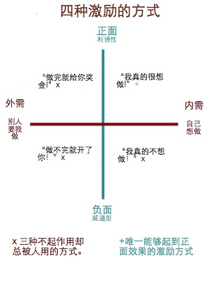
- 外来的激励不会起作用:
-
- 这种激励不能持续。一旦惩罚或者奖励没有了，动力也就没有了。
- 回报逐渐消减。要想得到始终如一的动力，必须不断加大惩罚或者奖励的力度。
- 对培养内在的激励有害。惩罚和奖励会磨去大家的主动性。再想让大家干什么，一定得逼着哄着。
- 负面的激励不会起作用:
-
- 心脏病人被告知：不许吃垃圾食品，不许抽烟喝酒，不许工作太累，否则就是死路一条。这算得上是绝对得负面激励了。两年以后，猜猜多少人接受了建议改变了生活方式？只有10%。
- 面对负面的激励，十个有九个不会改变。连死亡的威胁都不会起作用。
- 到底要怎样激励？:
-
- 外部激励和负面激励都不起作用，剩下只有一个选择，就是自我激励了。
- 如何才能形成自我激励？下面有一些创造和维持自我激励的因素：
- 挑战－挑战自己，完成新工作。
- 控制权－对自己可以做什么工作有选择的权利。
- 合作－和别人一起工作，互相帮助。
- 认可－自己的工作得到有意义的正面的认可。
- 另外还有：
- 愉快的工作环境。
- 信任。
5.1.1. 高知员工的绩效分析
附图:高知员工绩效体系
- 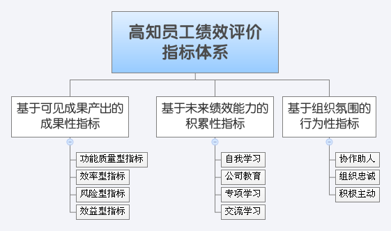
- 高知员工定义:
-
- 高知识含量员工的基本特性:
- 异质性: 主要工作内容是运用自身知识进行创造性工作;
- 风险性: 自身知识的积累和投资具有高风险性,即使公司稳定,但是由于策略的变化,可能导致员工本身含有的知识体系过时,而告成失业!
- 流动性: 高知员工的工作选择是自身人力资本最大化实现和最大化增长的主要动力;
- 自主性: 高知员工本身收入已经足够高到主要的追求是自我实现,而不是物质,所以,追求社会尊重和自身的技术发展是其高度自主的方面;
- 高知识含量员工的基本特性:
- 管理高知员工:
-
- 高知员工在高科技公司是核心资产:
- 高知员工是知识创新的源泉
- 高知员工决定了企业物理设备/正式规则和常规
- 模糊知识的传递依赖高知员工
- 组织知识获取决定于高知员工的知识存量
- 高知员工是组织记忆重要的知识存储器
- 所以,对高知员工的有效管理,直接影响企业的知识管理成效
- 高知员工在高科技公司是核心资产:
5.2. 学习型组织
- 定义:
-
- 是一个能熟练创造/获取和传递知识的组织,同时也要善于修正自身的行为,以适应新的知识和见解
- 解析:
-
- 组织学习是指通过更加先进的知识和更加透彻的理解来改善活动的过程 ~ Acadmeny of Management Review,Oct. 1985
- 在处理信息的过程中,如果一个组织的潜在行为发生了文化,我们就说这个组织是在学习 ~ Organization Science. Feb. 1991
- 组织学习就是一个发现错误并修正错误的过程~Haverd Business Review,Sep.-Oct. 1997
- 组织学习是通过共享信息/知识和精神模式形成的...并建立在过去的知识和经验即记忆基础上 ~ Sloan Management Revire, Spr.1989
- 建立学习型组织:
-
- 3M 原则:
Meaning ~ 定义, 必须有令人信服的,可操作的易于应用的;Management ~ 管理, 为建立实践树,给出清晰的指导原则;Measurement ~ 评估,需要好的工具来确定组织的学习效率和水平,以确保组织真正在取得进步!
- 3M 原则:
5.3. 企业文化!
附图:知识管理对象转化关系图谱

所以,在高科技企业内部,方面领域知识,可能就等于高工资,这种情况下如何激励成员勇于分享知识,进而加速企业内部的知识流通速度,加速创新成果的产生?! `` 只能是文化! ``
- 究竟什么是企业文化?:
-
可以从7个方面来定义:
- 《辞源》对文化的解释是“文治和教化”，“文”是慢慢积累的意思，所以企业文化是无法一蹴而就的。
- 企业文化是企业的个性：团体的共同信仰、价值观和行为。
- 企业文化是象征的、整体的、惟一的、稳定的、难于改变的。
- 企业文化既有有形的部分，也有无形的部分，是由有意识学习与无意识学习组成的，不是书面的理想、愿景和使命，而是日常的实务、沟通和信仰。
- 简单地说，它是在一个企业里事情如何做好。
- 企业文化还可以看做一个循环、哲学表达价值，价值体现于行为上、行为说明哲学。
- 企业文化也可以看作一个系统
- 企业文化现象有哪些:
-
同样有七个方面：
- 风俗、习惯、舆论，不同地域的风俗、习惯、舆论，有可能成为这个地方的企业的文化现象。
- 思维方式;以一个事例来说东西方思维方式的不同：美国人和日本人一同遇到狮子时，日本人把鞋带系紧准备跑，美国人就嘲笑日本人：“你跑得过狮子吗？”日本人回答：“我只要跑得过你就行！”
- 行为准则。美国人在办企业时，利字当头，而日本人则更讲究忠诚。
- 价值观念。主要有利润价值观和服务价值观两个方面。
- 精神境界。
- 作风。有的企业推行强势管理，有的企业倡导“仁”字。
- 待人艺术
- 企业文化有哪些要素?:
-
企业文化包含五个要素：
- 地域观, 不同的地方有可能产生不同的企业文化，正所谓“一方水土养一方人”。
- 价值观，这是企业文化的核心。
- 英雄人物，即企业的灵魂人物，“物以类聚、人以群分”，什么样的领导就可能带出什么样的一帮下属。
- 习俗与仪式;
- 文化网络。企业内部的信息是通过什么样的渠道在传送，这就形成了网络，而文化网络一旦形成，较难改变，除非继任者强行推翻它
- 如何识别企业文化?:
-
可以从十个方面进行识别：
- 一是识别工作团队的态度、行为偏好和工作环境。
- 二是要同时观看有形的和无形的。
- 三是看建筑物、办公室、店面和公众形象、公众关系。
- 四是看真正的报酬结构。
- 五是看建筑和设计。
- 六是看服饰。
- 七是看组织过程和结构。
- 八是看仪式、象征和庆祝方式。
- 九是看常用语言和口头禅。
- 十是看标志、宣传文件和宣传标语等。
5.4. 评估
5.4.1. KMMM
KnowledgeManagementMaturityModel ~ 知识管理成熟度模型:
| 层次 | 内容 |
|---|---|
| 5 | 组织的知识/政策/实践和优化了的活动的不断改进 |
| 4 | 管理过程包含细化的KM质量措施;组织调整其员工实践活动来激励和支持社区知识竞争力的开发 |
| 3 | 对核心业务过程中规定地的知识要求进行整理/标准化,并为组织整合成为一个标准过程(找出差距) |
| 2 | 有可重复的创造/利用和共享知识的机制,清晰的构成业务和开发计划 |
| 1 | 有专门措施来支持知识获得和再利用的过程 |
5.4.2. 细则
最终KM实施效果可以从以下几个方面评估：
- 人力资本
- 培训费用
- 组织学习
- 员工忠诚度
- 管理经验
- 创新资本
- 研发费用
- 从事创新的员工比率
- 产品更新
- 知识产权
- 客户资本
- 满意度
- 服务质量
- 合作的时间
- 重复购买
- 销售额
- 知识识别阶段
- 知识库中联系的数目
- 知识库中主题的数目
- 点击率
- 生产力
- 知识诱导阶段
- 来自于知识库的新需求
- 可达到的相关资源
- 知识分发阶段
- 推的方式分发
- 拉的方式分发
- 知识利用阶段
- 知识聚集活动中的系统利用率
- 用户满意度
- 知识利用过程中产生的商业机会
6. 关于
6.1. 参考
- 彼得.F.德鲁克（Peter F. Drucker）:知识管理——《哈佛商业评论》精粹译丛,中国人民大学出版社 2004
- [美]温格等:实践社团：学习型组织知识管理指南,机械工业出版社 2003
- [英]奈特（Knight,T.） ,豪斯（Howes,T.）:知识管理：有效实施的蓝图,清华大学出版社 2006
- [美]卢米赞:识管理-完全傻瓜IDIOT,辽宁教育出版社 2006
- 陈娟 / 芮明杰:高技术企业知识体系的构建与管理,上海财经大学出版社 2006
- [英]布鲁金:企业记忆--知识管理战略,辽宁教育出版社 1999
- 马国臣:基于企业团队和员工个体双重视角的知识管理,经济科学出版社 2007
- 杨晨:用知识产权管理赢得竞争优势--知识产权管理理论与实务,科学出版社 2008
- [美]韦纳:共创未来(打造自由软件神话),上海科技教育出版社 2002
- 周爱民:大道至简-软件工程实践者的思想,电子工业出版社 2007
- [德]盖伦:技术时代的人类心灵——哲人石丛书·当代科学思潮系列,上海科技教育出版社 2003
- [美]依柯诺米（Economy,P.）/纳尔逊（Nelson,B.）:管理管什么,机械工业出版社 2006
- yyq123 & jhkzz:传递最佳实践的知与行 http://blog.vsharing.com/yyq123/
| 动力源自::txt2tags | 简介 | t2t原稿 |